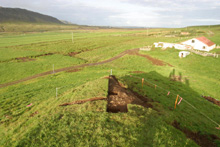
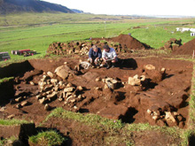
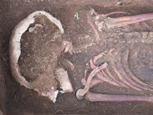
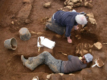
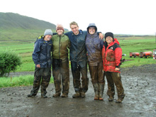

Archaeological Field Work | 2003 Field Season - Churchyard and Cremation
Our work at the Huldahóll mound on the Hrísbrú farm in 2002 and 2003 confirmed the earlier observation in the 2001 field season that humans constructed portions of this impressive mound, looking west out to the ocean at the seaward entrance to the Mosfell Valley.
In 2001, while excavating a small trench near the top of the knoll, we encountered a calcined fragment of a human cranial vault. The dense concentration of charcoal and ash with fragments of burnt bone and remnants of metal artifacts found at the base of the soil horizon near the skull fragment strongly suggested that we had identified the remains of a Viking Age cremation site placed in a mound modified to resemble a symbolic ship.
The structural remains uncovered on the Kirkjuhóll knoll in 2002 include the well-preserved stone foundation of the south wall the chancel or choir of a small stake church. The 2003 excavations uncovered the remains of the other walls of the church's chancel. The radiocarbon dates obtained are all consistent with the hypothesis that this structure, which may have gone through two significant building phases, is the conversion-age church described in Egil’s Saga.
In 2002 and 2003, we excavated additional sections of the buried ash and charcoal deposit on the top of the Hulduhóll mound, finding three further cremated human skull remains.
In the 2001 and 2002 excavations of the graveyard at Hrísbrú, nine burials were excavated around the south and east walls of the church. The burials, which consisted of 8 adults (6 males, 1 female, and 1 undetermined) and one poorly preserved infant varied in preservation, orientation, and treatment. At least 7 were buried in an east-west orientation with their heads to the west. The 2003 excavations added an additional five burials (5 males) mostly directly north of the church along with evidence of several empty graves to the south.
Many of the burials appear to have been interred in coffins. Along with coffin traces, nails, and clench bolts, burial associations consisted of a carved piece of whalebone, a staff gripped in the hand of a skeleton, an iron pot fragment, and pieces of wood and perhaps leather.
 A view of Huldahóll mound, the modified knoll at Hrísbrú.
 The excavated Hrísbrú church with Davide Zori and Mark Tveskov.
 Skeletal remains excavated from the Hrísbrú churchyard.
 Phillip Walker and Kaethin Prizer excavating a burial at Hrísbrú.
 Davide Zori, Jacqueline Eng, Melissa Batterson, Shawna Rider, Kaethin Prozer at Hrísbrú.